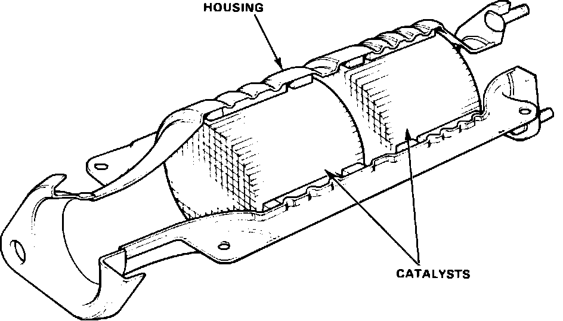

Catalytic Converter: Description and Operation
Three-Way Catalytic Converter (TWC):

The three way catalytic converter simultaneously removes up to 90% of all three major pollutants, (HC, CO, and oxides of nitrogen). A complete catalytic reaction is dependent on the fuel mixture staying within a very narrow range (+/- 1% of 14.7:1) which can only be achieved with a properly functioning oxygen sensor system. The catalytic converter consists of a metal housing, a ceramic grid substrate, and the catalytic coating of platinum and rhodium. The metal content is about 2 grams of platinum/rhodium.
As the exhaust gasses containing HC and CO are passed through the converter in the presence of oxygen, the platinum catalyst starts the oxidation (burning) process. The HC and CO then unite with the oxygen to form water vapor and carbon dioxide. This oxidation process has no effect on the NOx emissions.
To reduce the oxides of nitrogen (NOx), a separate reaction is necessary called a "reduction". A reduction reaction is the removal of oxygen from a material. In the Three Way type converters, rhodium is used as the catalyst to break down the oxides of nitrogen into its components, nitrogen and oxygen.
The effective conversion of pollutants begins at an operating temperature of about 250°C (480°F). The ideal operating temperature for maximum conversion and long service life is 400°C - 800°C (750°F - 1500°F). Engine malfunctions, for example misfires, can cause the temperature of the converter to increase to more than 1400°C (2500°F). Such temperatures lead to the complete destruction of the converter through the melting of the substrate material.
The use of leaded fuel must be avoided except in emergencies as it will permanently render the converter ineffective. The lead compounds used in leaded fuels are deposited in the pores and on the surfaces of the active material, reducing or eliminating exposure to the exhaust gasses. Excessive engine oil residues can also poison the catalyst.